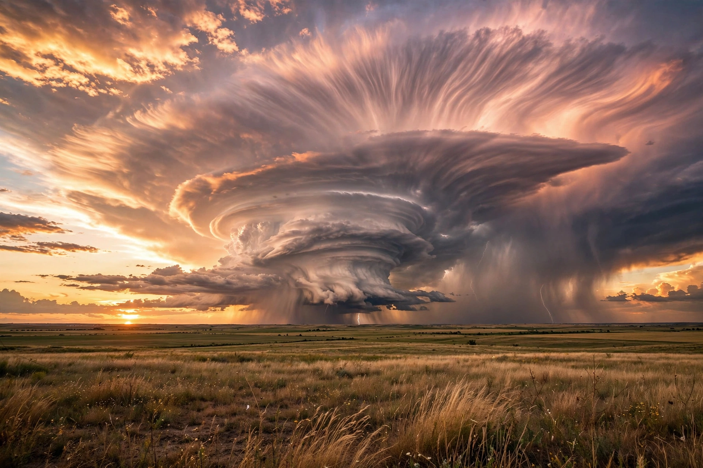

Thunderstorm

A thunderstorm is a storm produced by a cumulonimbus cloud, accompanied by {L('Lightning')} and thunder and usually by heavy rain, gusty winds and sometimes hail or tornadoes. At any moment roughly two thousand thunderstorms are in progress around the world.
Thunderstorms are the atmosphere's way of rapidly transferring heat and moisture upward: warm, moist, unstable air rises in powerful updrafts that can reach the tropopause.
Life cycle and types
A storm grows through a cumulus stage of rising air, matures as rain-cooled downdrafts develop alongside the updraft, and dissipates when the downdraft chokes off its fuel. Single-cell storms are brief; organised multicell clusters and squall lines last for hours; and supercells — storms with a rotating, persistent updraft (mesocyclone) — produce the largest hail, the most destructive straight-line winds and nearly all strong {L('Tornado','tornadoes')}.
Lightning arises from charge separation within the storm's mixture of ice crystals and supercooled droplets; thunder is the shock wave of the bolt's explosive heating.
Hazards and study
Beyond tornadoes, thunderstorms kill and damage through flash floods, lightning strikes, hail that can reach grapefruit size in extreme supercells, and downbursts that endanger aircraft. Weather radar (especially Doppler and dual-polarisation systems), lightning mapping and storm-spotter networks underpin warnings measured in minutes. See Meteorology and Weather.
See also: Lightning · Tornado · Meteorology · Weather · Flood · Hurricane